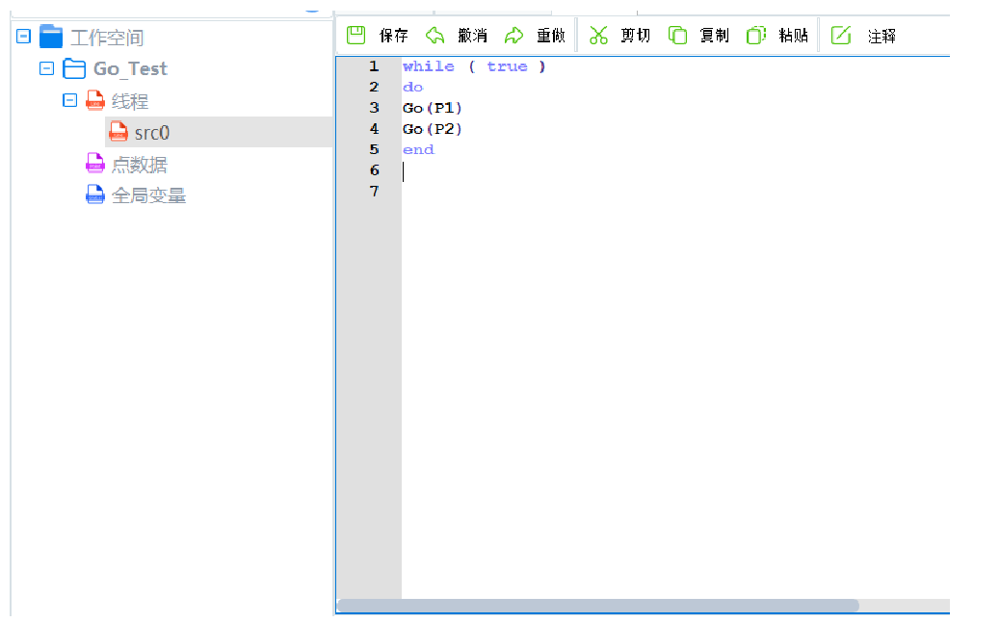
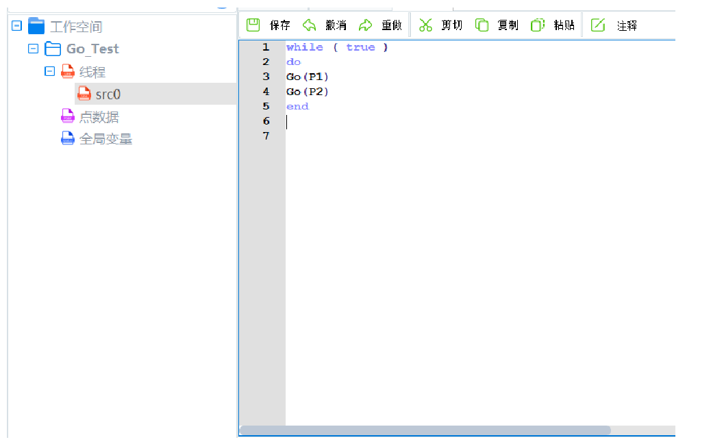

越疆机器人软件共分两部分，一是示教器平板上的CRStudio，另一个是电脑端SCStudio,两者大体界面相同，可能后台代码是大部分共用，只是针对不同平台做了些布局调整。 软件有多处bug,并且很多功能只是做了个按键，实际功能并没有做。 国内厂家做机器人控制器的好多是从IT行业转过来的，很多功能安全/稳定性没有考虑，这样的产品在实际工厂生产线会有很大隐患。虽然现在多数机器人建模模型都已经有开源的代码，但是都是消费级产品使用或者是仅仅个人做实验的，如果直接移植，即使能用也是偶尔出现故障，所以要仔细研读代码，增加很多安全措施，。 下面就先简单上几张图片，具体说明以后再加。。。。。 图形化编程是用的Blockly,指令/角本解释器是采用的Lua：
 
